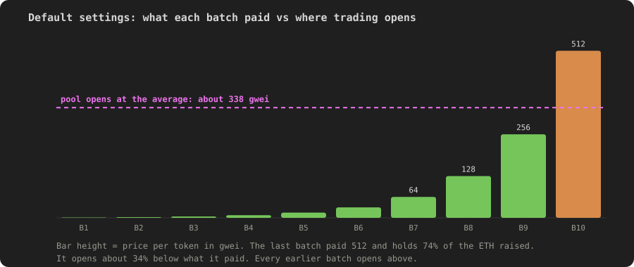
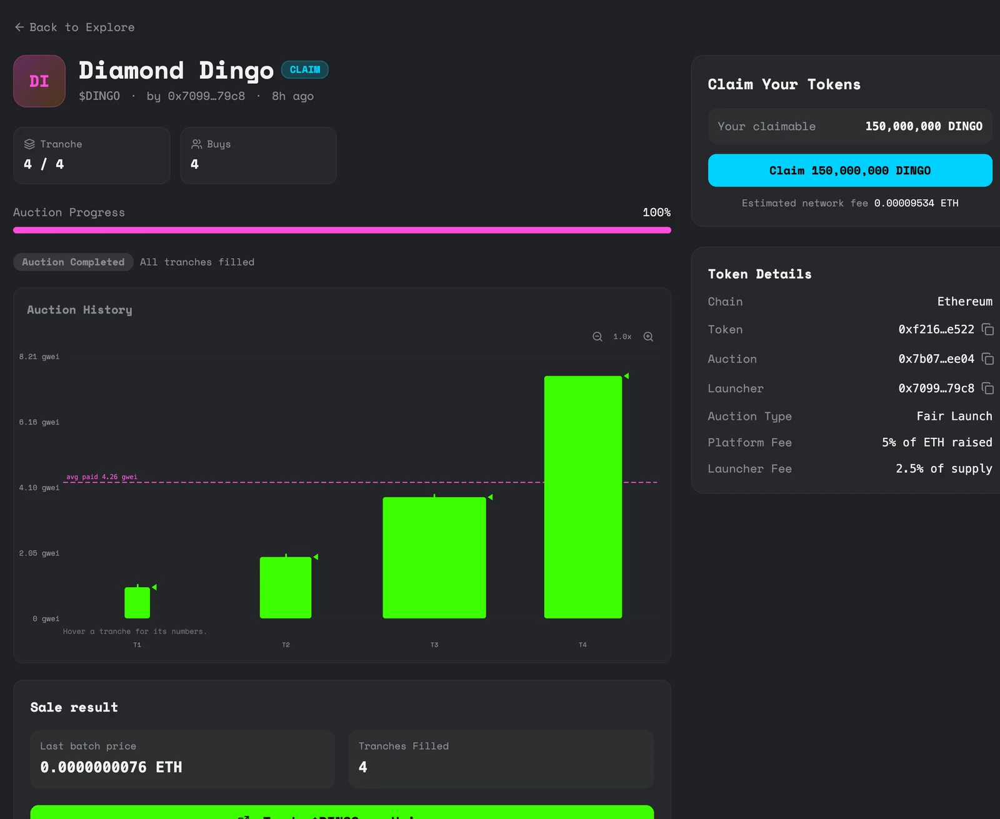

The pool at sellout
When a sale sells out, a market is created straight away. This page explains what goes into it and what price it opens at, because that price surprises people.
What happens in the final buy
The buy that takes the last token also takes the fees, pairs the remaining ETH with the remaining reserve tokens in a Uniswap pool, sends the LP tokens to a dead address and opens claims. All in one transaction.
Because nobody holds the LP tokens, nobody can withdraw that liquidity. Not the launcher, not punk.fun. There's no unlock date because there's nothing left to unlock.
The price it opens at
The starting point is the average price across the whole sale: the ETH the sale keeps after price differences go back to buyers, divided by the 500 million tokens sold. Then two things move it.
- The fees. The platform's 5% comes out of the pool's ETH, and the creator fee comes out of the pool's tokens. When the creator fee is 5% of the reserve, the two cancel out and the pool opens at the average. A lower creator fee opens it a little below the average, and a higher one a little above.
- The launch price multiplier, if the launcher set one. See below.
| Creator fee (share of the reserve) | Pool opens at, with no multiplier |
|---|---|
| 0% | About 5% below the average |
| 5% | The average |
| 10% | About 6% above the average |
| 20% | About 19% above the average |
Either way, the important part is the same: trading doesn't open at the price the last batch paid.
A worked example
Take a sale on the default settings, where each batch is twice the size and twice the price of the last, with no decay, and a creator fee of 5% of the reserve.

| Figure | |
|---|---|
| Total raised | About 169 ETH across 10 batches |
| Share raised in the last batch | 74% |
| Price the last batch paid | 512 gwei per token |
| Average price across the sale | About 338 gwei per token |
| Price the pool opens at | About 338 gwei per token |
So the last batch, which is three quarters of the money in the sale, starts about 34% below what it paid before anyone has traded. Earlier batches start above what they paid. This isn't a bug or a fee, it's arithmetic: the average is always below the top of a rising price ladder.

If you buy early, you're likely to be up when trading opens. If you buy in one of the last batches, you may be down straight away. The gap is bigger the more the price climbs during the sale.
The launch price multiplier
A launcher can choose to open the pool above the average by putting fewer reserve tokens into it and burning the rest. This is the launch price multiplier in the launch form's advanced settings, anywhere from 1x to 3x.
- At 1x, the default, nothing is burned.
- At 1.5x, a third of the pool's tokens are burned and the pool opens 1.5 times higher. At the default settings with a 5% creator fee, that's roughly where the last batch breaks even.
- Above 1x the pool is thinner, because it holds fewer tokens. You're buying price headroom, not depth, so the price moves more on each trade.
The burned tokens are destroyed for good, which lowers the total supply. It doesn't change what buyers or the launcher receive.